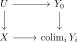
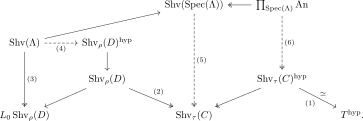

We will now discuss the notion of coherent topoi. While this is a somewhat technical topic, it plays an important role in topos theory, and also shows up prominently in algebraic geometry, so it seems worth at least briefly discussing it. An alternative detailed treatment may be found in [Barwick et al. 2018, Chapter 3].
6.7.1. An overview
Before diving into the technical details, let us provide an overview of the results of this section.
The main concept introduced in this section is that of coherent objects. For intuition, the example to keep in mind is the coherent objects in \(\An\), which as we will see are precisely the animae \(X\) for which \(\pi_0(X)\) is finite and every homotopy group \(\pi_i(X,x)\) with \(i \geq 1\) is finite. We may think of coherence as a strong finiteness condition on an object of a topos. For example, we will prove the following compactness result below in Theorem 6.114:
Theorem. (Compactness theorem)
Let \(X \in T\) be a coherent object. Then \(\tau_n X \in T_{\leq n}\) is compact for all \(n \geq -1\).
For a coherent object \(X \in T\), the functor \(\Ab(T_{\leq 0}) \to \Ab^{\Z}, A \mapsto H^*(X;A)\) preserves filtered colimits.
This theorem can be thought of as the underlying reason for various compactness results in the literature. For example, it is the reason that étale cohomology groups preserve filtered colimits: the étale topos is coherent.
While the theorem says that all truncations of a coherent object \(X\) are compact, the object \(X\) itself need not be compact! In particular, this notion of “finiteness” behaves quite differently from the other usual notion of finiteness that we are used to from homotopy theory, namely the subcategory \(\An^{\fin} \subseteq \An\) of finite animae, obtained from the point by closing up under pushouts and finite coproducts.
There is another, quite unrelated, result that we will discuss, called the completeness theorem. In the higher categorical setting this is due to Lurie, but it follows a classical result for classical topoi due to Deligne.
A topos \(T\) is called locally coherent if every object \(X \in T\) admits a cover \(\bigsqcup_{\alpha} U_{\alpha} \twoheadrightarrow X\) by coherent objects.
Every locally coherent topos admits a surjection\footnote{The notion of “surjection” of topoi was defined in Remark 5.70.} from a topos of the form \(\An_{/S}\) for some set\footnote{Recall that by “set” we mean a \(0\)-truncated anima.} \(S\).
Applying this result to an anima \(A\), regarded as a topos by forming the slice \(\An_{/A}\), this recovers the basic fact that there exists a surjection \(S \twoheadrightarrow A\) from a set \(S\).
A generic way to apply this theorem is to reduce suitable types of statements in locally coherent topoi to statements in sets/animae.
If \(T\) is a hypercomplete locally coherent topos, we get a surjection \(\An_{/S} \twoheadrightarrow T\), for which the pullback functor is conservative.
A Kan fibration in any hypercomplete topos is a ``realization-fibration", i.e. pullback along a Kan fibration commutes with geometric realizations: if \(X_{\bullet} \to Z_{\bullet}\) is a Kan fibration and \(Y_{\bullet} \to Z_{\bullet}\) is arbitrary, we have
In the next couple of subsections, we will provide proper definitions and discuss the proofs of these theorems. We start in Section 6.7.2 with the definition of \(n\)-coherent objects for all \(n\), and prove criteria for \(n\)-coherence. In Section 6.7.3 we define what it means for a site to be finitary, and show that the hypercomplete locally coherent topoi are precisely the hypercompletions of sheaves on finitary sites with pullbacks. In Section 6.7.4 we prove the compactness theorem and in Theorem 6.118 we prove the completeness theorem.
6.7.2. Coherent objects
The notion of coherence is closely related to the notion of quasi-compact objects in a topos:
An object \(X \in T\) is called quasi-compact if any cover \(\bigsqcup_{i} U_{i} \twoheadrightarrow X\) can be refined to a finite cover, i.e. there is a finite subset \(J \subseteq I\) such that the map \(\bigsqcup_{j \in J} U_j \to X\) is still an effective epimorphism.
We say a topos \(T\) is quasi-compact if \(* \in T\) is quasi-compact.
One problem with the notion of quasi-compactness is that it is not closed under the formation of fiber products. We may think of the collection of coherent objects in a topos as the universal approximation of the collection of quasi-compact objects by a collection of objects closed under fiber products. As a first approximation, we may consider the following class of objects:
An object \(X \in T\) is called quasi-separated if for any two maps \(Y \to X\) and \(Z \to X\) from quasi-compact objects \(Y\) and \(Z\), also the fiber product \(Y \times_X Z\) is quasi-compact.
The quasi-separatedness condition is very familiar for people working in algebraic geometry. However, it does not yet achieve our goal: there is in general no reason that quasi-separated objects are closed under base change. Now, in principle one could iterate this condition, and consider objects \(X\) such that the quasi-separated objects are closed under pullbacks, etcetera. However, what we would like to argue here is that this is not the correct way to think about things. In fact, this notion of quasi-separated objects is not really well-behaved in an arbitrary topos; one might argue it is somewhat of a “coincidence” that it works in algebraic geometry. For example, in algebraic geometry it is true that \(Y \times_X Z\) is quasi-compact for all \(Y,Z\) if and only if \(\Delta_X\) is relatively quasi-compact, but this fails to hold in an arbitrary topos; the “if”-direction always holds, but the “only if”-direction fails: \(\Delta_X\) being relatively quasi-compact is generally stronger. The reason this works in algebraic geometry is that you can cover any scheme by affine schemes, which are both quasi-compact and quasi-separated. After unwinding, you will find that the question reduces to the property that the product of two qcqs schemes over \(\Spec(\Z)\) is again qcqs. Note that this condition is precisely the next one in the hierarchy we hinted at before. More generally, this fact about \(\Delta_X\) being relatively quasi-compact will hold in a topos \(T\) whenever the following conditions are satisfied:
Every object in \(T\) is covered by qcqs objects.
The terminal object of \(T\) is “2-coherent”, meaning that products of qcqs objects are again qcqs.
The terminology on “coherence” can be somewhat confusing in the literature. For example, in SGA the word “coherent” is used in the following three different ways:
There is a notion for an object\(X \in T\) to be coherent; it just means that it is qcqs.
There is a notion for a morphism\(X \to Y\) to be coherent. Confusingly, this is not equivalent to the condition that the morphism \(X \to Y\) is qcqs when regarded as an object in \(T_{/Y}\). Since we would like to stick to the general convention that notions for maps are simply those for the associated object in the slice topos, we will follow Lurie to refer to this other definition by adding the adverb relatively, giving notions like “relatively quasi-compact” and “relatively qcqs”.
There is a notion for a topos to be coherent. This is the “correct” notion from the viewpoint of general topos theory. Marc mentioned he finds it quite impressive that Grothendieck managed to find the correct definition of coherence already so early on.
After all this preamble, let us now give a formal definition of coherent objects.
Let \(T\) be a topos. We will inductively define what it means for objects to be \(n\)-coherent for all \(n \geq 0\):
We say that an object \(X \in T\) is \(0\)-coherent if it is quasi-compact. (This is really a condition on the slice topos \(T_{/X}\).)
We say that \(T\) is locally \(n\)-coherent if any \(X \in T\) has a cover by \(n\)-coherent objects.
An object \(X \in T\) is said to be \(n\)-coherent if \(T_{/X}\) is \((n-1)\)-coherent, locally \((n-1)\)-coherent, and for all maps \(Y \to X \leftarrow Z\) such that \(Y\) and \(Z\) are \((n-1)\)-coherent, the pullback \(Y \times_X Z\) is \((n-1)\)-coherent.
We say \(T\) is \(n\)-coherent if the terminal object is \(n\)-coherent.
A topos is 1-coherent if it is locally quasi-compact, and qcqs. A topos \(T\) is 2-coherent if and only if it is qcqs, locally qcqs, and for all qcqs \(X,Y \in T\) also \(X \times Y\) is qcqs.
We say that \(X \in T\) is coherent if it is \(n\)-coherent for all \(n\). We say \(T\) is coherent if \(* \in T\) is coherent and locally coherent if every object \(X \in T\) admits a cover by coherent objects.
One can show that an anima \(X \in \An\) is \(n\)-coherent if and only if \(\pi_0(X)\) is finite and \(\pi_i(X,x)\) is finite for every base point \(x\) and every \(1 \leq i \leq n\); this can for example be proved using Proposition 6.105 below. Any anima is locally coherent, since it may be covered by points, which are coherent.
Let \(X\) be a locale. An element of \(X\) is compact if every expression of it as a join admits a finite subcover; equivalently, the corresponding subterminal object of \(\Shv(X)\) is quasi-compact. The topos \(\Shv(X)\) is locally coherent if and only if the compact elements form a basis which is closed under finite meets. In this case \(X\) is called a locally coherent locale. It is coherent precisely when, in addition, the top element is compact.
For locales, local coherence already implies local \(n\)-coherence for every \(n\). Consequently, the preceding conditions characterize locally coherent and coherent localic topoi, respectively. The completeness theorem below implies that a coherent locale is spatial, and its spatial realization is a spectral space. Conversely, the locale of open subsets of a spectral space is coherent. The corresponding local statement identifies locally coherent spatial locales with locally spectral spaces.
A map \(f\colon Y \to X\) is called relatively \(n\)-coherent if for every \(Z \to X\) with \(Z\)\(n\)-coherent, also \(Z \times_X Y\) is \(n\)-coherent.
Let \(f\colon Y \to X\) be a map and assume that \(X\) is \((n+1)\)-coherent. Then \(f\) is relatively \(n\)-coherent if and only if \(Y\) is \(n\)-coherent.
Let \(T\) be a topos, and suppose \(T_0 \subseteq T\) is a full subcategory of \(n\)-coherent objects such that every \(X \in T\) is covered by objects of \(T_0\). Then the following conditions hold:
A morphism \(f\colon Y \to X\) is relatively \(n\)-coherent if and only if for every map \(U \to X\) with \(U \in T_0\) the pullback \(U \times_X Y\) is \(n\)-coherent.
An object \(X \in T\) is \((n+1)\)-coherent if and only if \(X\) is quasi-compact and for every pair of maps \(U \to X \leftarrow V\) with \(U ,V \in T_0\), the pullback \(U \times_X V\) is \(n\)-coherent.
A topos \(T\) is locally coherent if and only if there exists a full subcategory \(T_0 \subseteq T\) covering \(T\) which is closed under fiber products and such that every \(X \in T_0\) is quasi-compact.
Proof
The “only if” is clear: if \(T\) is locally coherent, we may take \(T_0 := T^{\mathrm{coh}}\) the subcategory of coherent objects, which by design are closed under fiber products.Conversely, we inductively use the proposition to show that \(T_0 \subseteq T^{n\text{-coh}}\) for all \(n\). In particular, \(T_0\) consists of coherent objects. Since they cover \(T\), we see that \(T\) is locally coherent by definition.
If \(T\) is not just locally coherent, but also coherent, then the collection of objects \(T_0\) provided by the corollary may be assumed to contain the final object.
If \(X\) is \(n\)-coherent and \(f\) is \((n-1)\)-connected, then \(Y\) is \(n\)-coherent.
If \(Y\) is \(n\)-coherent and \(f\) is \(n\)-connected, then \(X\) is \(n\)-coherent.
If \(Y\) is \(n\)-coherent, \(f\) is \((n-2)\)-truncated, and \(X\) is \((n-1)\)-coherent, then \(X\) is \(n\)-coherent.
Proof
We argue simultaneously for the three assertions by induction on \(n\). For \(n=0\), the first assertion says that effective-epimorphic images of quasi-compact objects are quasi-compact, while the second and third reduce to the stability of quasi-compactness under pullback along monomorphisms. Suppose now that the assertions are known in degree \(n-1\). The characterization in Proposition 6.105 reduces \(n\)-coherence to quasi-compactness together with the \((n-1)\)-coherence of pullbacks against a covering family of \((n-1)\)-coherent objects. After pulling back \(f\) along such a family, its connectivity or truncation bound is unchanged. The three required statements about these pullbacks are then exactly the induction hypotheses in the relevant slice topoi. This proves all three assertions.
Consider the unique factorization of \(f\colon X \to Y\) as
\[X \to \tau_{n-1}(X/Y) \to Y\]
into an \((n-1)\)-connected map followed by an \((n-1)\)-truncated map. If \(X\) is \(n\)-coherent and \(Y\) is \(m\)-coherent, then \(\tau_{n-1}(X/Y)\) is \(\max(n,m)\)-coherent.
Proof
By Proposition 6.108(1), the object \(\tau_{n-1}(X/Y)\) is \(n\)-coherent, so we are done if \(n \geq m\). If \(m > n\), we may inductively show that \(\tau_{n-1}(X/Y)\) is \((n + k)\)-coherent for all \(k = 0, \ldots, m-n\). If we already know it is \((n+k-1)\)-coherent, then using that \(Y\) is \(m\)-coherent and \(\tau_{n-1}(X/Y) \to Y\) is \((n-1)\)-truncated, we get by Proposition 6.108(3) that \(\tau_{n-1}(X/Y)\) is \((n+k)\)-coherent.
Let \(T\) be an \(n\)-localic topos. If \(T\) is \((n+1)\)-coherent, then \(T\) is coherent and locally coherent.
Proof
By assumption, every object \(X \in T\) is covered by objects from \(T_{\leq n-1}\). Let \(X \in T_{\leq n-1}\). By assumption on \(T\), there exists an effective epimorphism \(\bigsqcup_i U_i \twoheadrightarrow X\) where each \(U_i\) is \(n\)-coherent. Because \(X\) is \((n-1)\)-truncated, this map descends to a map \(\bigsqcup_i \tau_{n-1}(U_i) \twoheadrightarrow X\), which is still an effective epimorphism. By Proposition 6.108(1), each \(\tau_{n-1}(U_i)\) is again \(n\)-coherent. We conclude that every \(X \in T\) is covered by objects from \(T_{\leq n-1}^{n\mathrm{-coh}}\).Since \(T\) is \((n+1)\)-coherent, it follows that \(T_{\leq n-1}^{n\mathrm{-coh}}\) is closed under finite limits. By Corollary 6.106, it follows that \(T\) is both coherent and locally coherent.
Assume that \(T\) is both bounded and coherent. Then \(T\) is locally coherent.
Proof
Since \(T\) is bounded, it is generated under colimits by truncated objects. Hence every object of \(T\) admits an effective epimorphism from a coproduct of truncated objects, and it is enough to cover a truncated object \(X \in T_{\leq n}\) by coherent objects. Since \(T\) is coherent, we may find an effective epimorphism \(\bigsqcup_i U_i \twoheadrightarrow X\) where each \(U_i\) is \((n+1)\)-coherent. Because \(X\) is \(n\)-truncated, this map factors through an effective epimorphism \(\bigsqcup_i \tau_n(U_i) \twoheadrightarrow X\). By Proposition 6.108(1) and (3), each \(\tau_n(U_i)\) is coherent.
A Grothendieck topology \(\tau\) on a category \(C\) is called finitary if every \(\tau\)-covering sieve contains a \(\tau\)-covering sieve which is generated by a finite number of morphisms in \(C\).
If \((C,\tau)\) is a finitary Grothendieck site and \(C\) admits fiber products, then \(\Shv_{\tau}(C)\) is locally coherent. If \(C\) also admits a terminal object, then \(\Shv_{\tau}(C)\) is also coherent.
If \(T\) is hypercomplete and locally coherent, then there exists a finitary site \((C,\tau)\) with fiber products such that \(T \simeq \Shv_{\tau}(C)^{\hyp}\). If \(T\) is also coherent, then we can choose \(C\) to have a terminal object.
Proof
For (1), let \(a\colon C\to\Shv_\tau(C)\) denote sheafified Yoneda. Every sheaf is covered by objects in the image of \(a\). Finitariness says precisely that each \(a(c)\) is quasi-compact: a cover of \(a(c)\) corresponds to a covering sieve on \(c\), which admits a finite covering refinement. Since \(C\) admits fiber products and \(a\) preserves them, the image of \(a\) is closed under fiber products. The claim now follows from Corollary 6.106. If \(C\) has a terminal object, its image is terminal, so the resulting topos is coherent.For (2), choose a small full subcategory \(C\subseteq T^{\coh}\) which covers \(T\) and is closed under fiber products; in the coherent case we also arrange that \(C\) contains the terminal object, using Remark 6.107. Give \(C\) the topology in which a family \((U_i\to U)\) covers if \(\bigsqcup_iU_i\to U\) is an effective epimorphism in \(T\). Since \(U\) is quasi-compact, every covering family admits a finite subfamily which still covers, so this topology is finitary.Let \(u\colon C \hookrightarrow T\) denote the inclusion. Since \(C\) is closed under fiber products, Proposition 2.43 shows that the left Kan extension
\[u_!\colon \PSh(C) \to T\]
is left exact. By definition of \(\tau\), all generating \(\tau\)-covering sieves are sent to effective epimorphisms in \(T\), so \(u_!\) factors as
\[\PSh(C) \to \Shv_{\tau}(C) \to T.\]
On the other hand, Lemma 6.57 shows that the restriction functor \(T \to \PSh(C)\) is fully faithful. Since its essential image consists of \(\tau\)-sheaves, the induced functor \(T \to \Shv_{\tau}(C)\) is also fully faithful. Thus \(\Shv_{\tau}(C) \to T\) is a left exact localization. It is epigenic because its kernel is generated by maps from covering sieves to representables, all of which become effective epimorphisms in \(T\). An epigenic quotient induces an equivalence on hypercompletions by [Anel et al. 2025, Lemma 2.1.33]. Since \(T\) is hypercomplete, we conclude that \(T \simeq \Shv_{\tau}(C)^{\hyp}\).
6.7.4. Compactness of coherent objects
We will now show the compactness result for coherent objects mentioned before.
If \(X \in T\) is \(n\)-coherent, then \(\Hom(X,-)\colon T_{\leq n-1} \to \An\) preserves filtered colimits, i.e. the object \(\tau_{n-1}(X) \in T_{\leq n-1}\) is compact.
The property of coherence is analogous to the property of “almost perfect” in the context of modules.
Proof
Pulling a filtered diagram back to the slice \(T_{/X}\) identifies the required mapping anima with the anima of sections. We may therefore replace \(T\) by \(T_{/X}\) and assume that \(X=*\); the hypothesis becomes the corresponding coherence condition on the terminal object of the slice. We prove the claim by induction on \(n\). For \(n = 0\), the assertion is exactly the definition of quasi-compactness, expressed in terms of filtered unions of subterminal objects.Now consider a filtered category \(I\) and an object \(Y \in \Fun(I, T_{\leq n-1})\). We have to show that the canonical comparison map
is an isomorphism. We will show the following claim:Claim. The map \(\beta_Y\) is an effective epimorphism.Assuming this for a moment, we may conclude. It remains to check that \(\beta_Y\) induces isomorphisms on path animae. Consider two points \(x,y \in \colim_i \Hom(X,Y_i)\). We may represent both at a common stage and, after replacing \(I\) by the corresponding undercategory, assume that this stage is an initial object \(0 \in I\). For each \(i\), let
\[E_i:=X\times_{(x_i,y_i),Y_i\times Y_i}Y_i,\]
where the second map to \(Y_i\times Y_i\) is the diagonal. The anima of sections of \(E_i\to X\) is the path anima from \(x_i\) to \(y_i\). Since \(Y_i\) is \((n-1)\)-truncated, \(E_i\to X\) is \((n-2)\)-truncated. Filtered colimits commute with finite limits in a topos, so the analogous object for \(\colim_iY_i\) is \(\colim_iE_i\). The induction hypothesis in \(T_{/X}\) therefore identifies the two path animae.Let us now prove the claim. Given a map \(X \to \colim_i Y_i\), we need to show that it factors through some finite stage \(Y_i \to \colim_i Y_i\). Since \(X\) is quasi-compact and locally \((n-1)\)-coherent, there is an effective epimorphism \(U \twoheadrightarrow X\) where \(U\) is \((n-1)\)-coherent, satisfying the additional property that the composite \(U \twoheadrightarrow X \to \colim_i Y_i\) factors through some \(Y_0\), where \(0 \in I\). (This uses that \(I\) is filtered.) Letting \(U_{\bullet} := \check{C}_{\bullet}(U \to X)\) and \(V_{i,\bullet} := \check{C}_{\bullet}(Y_0 \to Y_i)\), then the commutative diagram

induces a map on Čech nerves of the form
\[U_{\bullet} \to \colim_i V_{i,\bullet}.\]
Since \(U\) is \((n-1)\)-coherent and \(X\) is \(n\)-coherent, each \(U_m\) is \((n-1)\)-coherent.By induction on \(m \leq n\), we show that the map \(\sk_m(U_{\bullet}) \to \colim_i \sk_m(V_{i,\bullet})\) factors through some \(\sk_m(V_{i,\bullet})\), as semisimplicial objects. Here \(\sk_m\) denotes the \(m\)-skeleton. At the successor step, the boundary of the desired \(m\)-simplex has already been chosen at a finite stage. The remaining extension problem is a problem of sections for the pullback of
This map is \((n-m-1)\)-truncated, while \(U_m\) is \((n-1)\)-coherent; the induction hypothesis in the relevant slice therefore moves the extension to a finite stage. Filteredness lets us choose one stage for the finitely many faces and degeneracies. With \(m=n\), we obtain
and since \(\Hom_T(X,Y_i) \cong \Hom_T(\tau_{n-1}(X), Y_i)\) we may conclude.This is the skeletal lifting argument of [Lurie 2018, Proposition A.2.3.1]; the preceding discussion records the coherence and truncation estimates needed in its application here.
6.7.5. The completeness theorem
Recall that a morphism of logoi \(\phi\colon S \to T\) is called surjective if it detects effective epimorphisms (or equivalently if it detects \(\infty\)-connected maps). The goal of this section is to prove the following theorem:
For locales, this is exactly the result that says that coherent locales are spatial, i.e. the locale is a spectral space. For locally coherent classical topoi (in the classical sense), this recovers Deligne's completeness theorem.
There are several steps in the proof of this theorem which are interesting. Here is an outline of the proof:
First, we reduce to the case where \(T\) is coherent. In this case, we saw that \(T^{\hyp} \simeq \Shv_{\tau}(C)^{\hyp}\), where \((C,\tau)\) is a finitary site with finite limits.
For every site \((C,\tau)\), there exists a surjection \(\Shv_{\rho}(D) \to \Shv_{\tau}(C)\), where \(D\) is a poset. (This is called the Diaconescu cover. It is highly non-canonical.)
If \(L\) is a 0-localic topos (i.e. a locale), then there exists a surjection \(\Shv(\Lambda) \to L\) where \(\Lambda\) is a Boolean locale (i.e. a complete Boolean algebra).
The locale \(\Shv(\Lambda)\) is hypercomplete, so the functor \(\Shv(\Lambda) \to L_0\Shv_{\rho}(D)\) factors through the hypercompletion \((L_0\Shv_{\rho}(D))^{\hyp} \simeq \Shv_{\rho}(D)^{\hyp}\).
If \((C,\tau)\) is a finitary site with finite limits, then any map \(\Shv(\Lambda) \to \Shv_{\tau}(C)\) factors through \(\Shv(\Spec(\Lambda))\), where \(\Spec(\Lambda)\) is the spectrum of \(\Lambda\), seen as a commutative ring.
For any topological space \(X\), the topos \(\Shv(X)\) is covered by \(\prod_{x \in X} \An\).
We illustrate the proof strategy with the following diagram:

Assuming all these claims, we may give a proof of the theorem. We first consider \(\Shv_{\tau}(C)^{\hyp} \to T\), reducing us to \(\Shv_{\tau}(C)\). Then we have some surjection \(\Shv_{\rho}(D) \twoheadrightarrow \Shv_{\tau}(C)\), where \(D\) is a poset. Consider the 0-localic reflection \(L_0\Shv_{\rho}(D)\). There is a surjection \(\Shv(\Lambda) \twoheadrightarrow L_0\Shv_{\rho}(D)\). Now, since \(\Shv(\Lambda)\) is hypercomplete, this surjection will factor through \((L_0\Shv_{\rho}(D))^{\hyp} \simeq \Shv_{\rho}(D)^{\hyp}\). All in all, we obtain the composite
This then factors through a map \(\Shv(\Spec(\Lambda)) \twoheadrightarrow \Shv_{\tau}(C)\), which is surjective by cancellation properties. There is a covering \(\prod_{x \in \Spec(\Lambda)} \An \twoheadrightarrow \Shv(\Spec(\Lambda))\), and since its source is hypercomplete, the map to \(\Shv_{\tau}(C)\) factors through \(\Shv_{\tau}(C)^{\hyp}\). All in all, we obtain the desired surjection
A Boolean algebra\(\Lambda\) is a poset with finite joins \(x \lor y\) and meets \(x \land y\), where \(\land\) distributes over \(\lor\), and where every \(x \in \Lambda\) has a complement \(x^c\), i.e. an element satisfying \(x \land x^c = \bot\) and \(x \lor x^c = \top\).
Let \(\Lambda\) be a complete Boolean algebra. Then \(\Shv(\Lambda)\) has dimension \(\leq 0\). In particular, it is Postnikov complete.
Proof
It suffices to show that every \((-1)\)-connected object \(X\in\Shv(\Lambda)\) admits a global section. We construct, by transfinite induction, a strictly increasing family of elements \(U_\alpha\in\Lambda\), together with compatible sections \(s_\alpha\in X(U_\alpha)\), for as long as \(U_\alpha\neq\top\). Start with \(U_0=\bot\) and its unique section. At a limit ordinal \(\lambda\), set \(U_\lambda=\bigvee_{\alpha<\lambda}U_\alpha\). The compatible sections glue uniquely to a section over \(U_\lambda\) by the sheaf condition.Suppose that \(U_\alpha<\top\), and let \(V=U_\alpha^c\). Since \(X\to *\) is an effective epimorphism, there is a covering \(V=\bigvee_iV_i\) such that \(X(V_i)\) is nonempty for every \(i\). Choose a nonzero \(V_i\) and a section \(t_i\in X(V_i)\). The intersection \(U_\alpha\land V_i\) is initial, so \(s_\alpha\) and \(t_i\) agree there. They therefore glue to a section over \(U_{\alpha+1}:=U_\alpha\lor V_i\), and this element strictly contains \(U_\alpha\).If this process never reached \(\top\), it would define a strictly increasing map from the class of ordinals to the underlying set of \(\Lambda\), which is impossible. Hence some \(U_\alpha\) is \(\top\), and the corresponding section is a global section of \(X\).
To construct the functor (2) in the above diagram, we use the following:
For every \(0\)-localic topos \(L\), there exists a complete Boolean algebra \(\Lambda\) and a surjection \(\Shv(\Lambda) \twoheadrightarrow L\).
Proof
Write \(L=\Shv(\Uu)\) for a frame \(\Uu\). For every strict inequality \(u<v\) in \(\Uu\), consider the interval frame
\[[u,v]=\{x\in\Uu\mid u\leq x\leq v\}.\]
The map \(q_{u,v}\colon\Uu\to[u,v]\) given by \(x\mapsto (x\lor u)\land v\) preserves arbitrary joins and finite meets, and sends \(u\) and \(v\) to the bottom and top elements of the interval, respectively.For any frame \(A\), let
This is a complete Boolean algebra: finite meets are inherited from \(A\), joins are given by \(\neg\neg(\bigvee_i a_i)\), and complementation is given by \(a\mapsto\neg a\). The double-negation map \(A\to\operatorname{Reg}(A)\), \(a\mapsto\neg\neg a\), is a frame homomorphism. Applied to the nontrivial frame \([u,v]\), it still distinguishes its bottom and top elements. Hence the composite
and let \(h\colon\Uu\to\Lambda\) have components \(h_{u,v}\). Products of complete Boolean algebras are complete Boolean algebras, and \(h\) is a frame homomorphism. It is injective, since the component indexed by \((u,v)\) distinguishes any prescribed strict inequality \(u<v\). The corresponding map of locales therefore has conservative inverse-image functor, which is to say that the induced morphism \(\Shv(\Lambda)\to\Shv(\Uu)\) is surjective.
Let \(C\) be a category with topology \(\tau\). Then there exists a surjection \(\Shv_{\rho}(D) \twoheadrightarrow \Shv_{\tau}(C)\), where \(D\) is a poset.
We will prove this below. First, we state a corollary:
Let \(T\) be any topos. Then there exists a surjection \(\Shv(\Lambda) \twoheadrightarrow T\), where \(\Lambda\) is a complete Boolean algebra.
Proof
We may write \(T^{\hyp} \simeq \Shv_{\tau}(C)^{\hyp}\) for some \(C\). In light of the surjection \(T^{\hyp} \twoheadrightarrow T\), we may assume \(T = \Shv_{\tau}(C)^{\hyp}\). By Proposition 6.123, there is a surjection \(\Shv_{\rho}(D) \twoheadrightarrow \Shv_{\tau}(C)\), which induces a surjection \(\Shv_{\rho}(D)^{\hyp} \twoheadrightarrow \Shv_{\tau}(C)^{\hyp}\). Consider now the 0-localic reflection \(L_0\Shv_{\rho}(D)\) of this sheaf category. By Proposition 6.122, this receives a surjection \(\Shv(\Lambda) \twoheadrightarrow L_0\Shv_{\rho}(D)\). Since \(\Shv(\Lambda)\) is hypercomplete, this functor factors through the hypercompletion \((L_0 \Shv_{\rho}(D))^{\hyp}\), which is equivalent to \(\Shv_{\rho}(D)^{\hyp}\) by Lemma 6.58. It follows that the resulting functor \(\Shv(\Lambda) \twoheadrightarrow \Shv_{\rho}(D)^{\hyp}\) is surjective. All in all, we obtain surjections
where \((n,\sigma) \leq (n', \sigma')\) if and only if \(n \leq n'\) and \(\sigma = \sigma'\vert_{\Delta^{\{0,1, \dots, n\}}}\). We may define a functor \(N(P) \to \hat{C}\catop\), which sends a sequence \((n_0, \sigma_0) \leq \dots \leq (n_k, \sigma_k)\) to the composite \(\Delta^k \xrightarrow{n_0, \dots, n_k} \Delta^{n_k} \xrightarrow{\sigma_k} \hat{C}\catop\). By passing to realizations, this gives a functor
\[D := P\catop \to C.\]
We prove that this satisfies (1) and (2). Essential surjectivity is clear from the \(0\)-simplices. For (2), consider \(P_{(n,\sigma)/} \to (C\catop)_{\sigma(n)/}\) and an arrow \(\alpha\colon\sigma(n)\to c\) in \(C\catop\). Together, \(\sigma\) and \(\alpha\) define a map
The inclusion \(\Delta^n\cup_{\{n\}}\Delta^1\hookrightarrow\Delta^{n+1}\) is inner anodyne. Since \(\widehat C\catop\) is a category, we may extend this map to a simplex \(\widetilde\sigma\colon\Delta^{n+1}\to\widehat C\catop\). The object \((n+1,\widetilde\sigma)\) lies above \((n,\sigma)\) and its image represents \(\alpha\). Thus the indicated functor on undercategories is essentially surjective. Passing to opposites gives (2).From now on, fix such an \(f\). For a sieve \(R\hookrightarrow y(x)\) and a map \(\alpha\colon x'\to x\) in \(D\), let \(\langle f(\alpha^*R)\rangle\) denote the sieve on \(f(x')\) generated by the image of \(\alpha^*R\). Declare \(R\) to be a \(\rho\)-cover if \(\langle f(\alpha^*R)\rangle\) is a \(\tau\)-cover of \(f(x')\) for every \(\alpha\). This defines a Grothendieck topology. The maximal sieve is covering and stability under pullback is built into the definition. For transitivity, suppose that \(R\) covers \(x\) and that a sieve \(S\) on \(x\) pulls back to a cover along every map belonging to \(R\). After an arbitrary base change \(x'\to x\), the images under \(f\) of the arrows in the pullback of \(R\) cover \(f(x')\). Over each of them, the image of the corresponding pullback of \(S\) covers. The local character axiom for \(\tau\) then shows that \(\langle f(S|_{x'})\rangle\) covers \(f(x')\).Claim. The composite
factors through \(\Shv_{\tau}(C)\). Let \(R\hookrightarrow y(c)\) be a \(\tau\)-covering sieve. It suffices to show that \(f^*R\to f^*y(c)\) becomes an effective epimorphism after \(\rho\)-sheafification. Pull it back along a map \(y(d)\to f^*y(c)\), corresponding to a map \(f(d)\to c\). The resulting sieve \(S\) on \(d\) consists of those arrows \(e\to d\) whose composite \(f(e)\to c\) belongs to \(R\). After any base change \(d'\to d\), the pullback of \(R\) along \(f(d')\to c\) is a \(\tau\)-cover. By (2), every object of its indexing slice is, up to equivalence, the image of an object of \(D_{/d'}\). It follows that the sieve generated by \(f(S|_{d'})\) is this pullback sieve, and hence is a \(\tau\)-cover. Thus \(S\) is a \(\rho\)-cover. This proves the claim and gives a morphism of logoi
It remains to prove that \(L_\rho f^*\) detects effective epimorphisms. Let \(X\to Y\) be a map of \(\tau\)-sheaves whose image is an effective epimorphism. To test that \(X\to Y\) is an effective epimorphism, fix \(y(c)\to Y\). By (1), after replacing \(c\) by an equivalent object we may write \(c=f(d)\). The corresponding section of \(f^*Y\) over \(d\) lifts locally through \(f^*X\) after a \(\rho\)-covering sieve \(S\) of \(d\), because the sheafification of \(f^*X\to f^*Y\) is an effective epimorphism. By the definition of \(\rho\), the sieve generated by \(f(S)\) is a \(\tau\)-cover of \(c\). Over this cover the original section lifts through \(X\), so \(X\to Y\) is an effective epimorphism. Hence \(L_\rho f^*\) is conservative on effective epimorphisms, and the corresponding morphism of topoi is surjective.
6.7.5. Factorization through the spectrum
Now, let \(\Lambda\) be a complete Boolean algebra. Then \(\Spec(\Lambda)\) is a \(0\)-dimensional spectral space. By some abstract theory we will treat as a black-box, there is an inclusion
which is the inclusion of the quasi-compact open (=clopen) subsets. This inclusion admits a left exact left adjoint
\[v\colon \Open(\Spec(\Lambda)) \to \Lambda,\]
which is given by sending \(U\) to \(\bigvee_{u(\lambda) \subseteq U} \lambda\). Thus \(v(U)\) is the join in \(\Lambda\) of all clopen subsets contained in \(U\); it need not itself correspond to a clopen subset of \(\Spec(\Lambda)\). This results in a left exact localization
where \(\phi^*\) is the left Kan extension along \(v\), while \(\phi_*\) is left Kan extension along \(u\), or equivalently precomposition with \(v\). Note that \(\phi_*\) is fully faithful.
For every effective epimorphism \(\bigsqcup_{i=1}^n Y_i \to X\) in \(\Shv(\Lambda)\), the map \(\bigsqcup_{i=1}^n \phi_*(Y_i) \to \phi_*(X)\) is an effective epimorphism in \(\Shv(\Spec(\Lambda))\).
Proof
The category \(\Shv(\Spec(\Lambda))\) is generated under colimits by the image of \(u\): as \(\Spec(\Lambda)\) is a spectral space, it is generated by the quasi-compact opens. Since we have
Note that the map \(\lambda_i \hookrightarrow \lambda\) is representable, because any subobject of a representable is representable (since \(\Lambda\) is precisely the subobjects of the terminal sheaf).Since \(\Lambda_{/\lambda_i}\) has dimension at most \(0\), the map \(u_i\) has a section \(s_i\). So, we then have the composite
which is an effective epimorphism in \(\Shv(\Spec(\Lambda))\), because \(u\) preserves finite joins. But then it follows that also the second map is an effective epimorphism.
6.7.5. Proof of the completeness theorem
We can now finally deduce the proof of the main result.
Proof
First suppose that \(T\) is coherent. By Proposition 6.113, there is a finitary site \((C,\tau)\) with finite limits and an equivalence \(T^{\hyp}\simeq\Shv_\tau(C)^{\hyp}\). The composite \(T^{\hyp}\to T\) is surjective, so it is enough to construct a surjection onto \(\Shv_\tau(C)^{\hyp}\).By Corollary 6.124, there exists a complete Boolean algebra \(\Lambda\) and a surjection \(\Shv(\Lambda) \twoheadrightarrow \Shv_{\tau}(C)\). We claim that this factors as follows:
Since \(C\) has finite limits, the given morphism of topoi \(\Shv(\Lambda) \to \Shv_{\tau}(C)\) corresponds to a morphism of logoi \(\Shv_{\tau}(C) \to \Shv(\Lambda)\), which is obtained by left Kan extending some left exact functor \(C \to \Shv(\Lambda)\). We may then consider the following composite:
This is still left exact. Since \(\tau\) is finitary, it suffices for descent that finite covering families be carried to effective epimorphisms, and this follows from Lemma 6.125. We therefore obtain a morphism of topoi \(\Shv(\Spec(\Lambda)) \to \Shv_\tau(C)\). Since \(\phi^*\phi_*\simeq\id\) by full faithfulness of \(\phi_*\), its composite with \(\Shv(\Lambda)\to\Shv(\Spec(\Lambda))\) is the original surjection. Right cancellation shows that \(\Shv(\Spec(\Lambda))\to\Shv_\tau(C)\) is itself surjective.For every point \(x\in\Spec(\Lambda)\), the stalk functor gives a point \(\An\to\Shv(\Spec(\Lambda))\). Their coproduct defines a surjection
because stalks at all points jointly detect isomorphisms of sheaves on a topological space. The source is hypercomplete, so the composite with \(\Shv(\Spec(\Lambda))\to\Shv_\tau(C)\) factors through the hypercompletion \(\Shv_\tau(C)^{\hyp}\). The factor remains surjective, and composing with \(T^{\hyp}\to T\) proves the theorem for coherent \(T\).Finally, suppose that \(T\) is only locally coherent. Choose a set of coherent objects \((U_i)_{i\in I}\) covering the terminal object. Then \(\prod_{i\in I}T_{/U_i}\to T\) is surjective, and every slice \(T_{/U_i}\) is coherent. Applying the coherent case to each slice and taking the product of the resulting sets gives a surjection \(\An^S\to T\) for a set \(S\).
References
Clark Barwick, Saul Glasman, Peter Haine. Exodromy. 2018.
Mathieu Anel, Georg Biedermann, Eric Finster, André Joyal. Left-exact localizations of $\infty$-topoi III: The acyclic product. 2025.
Jacob Lurie. Spectral Algebraic Geometry. under construction (version dated February 2018), www.math.ias.edu/~lurie/papers/SAG-rootfile.pdf. 2018.